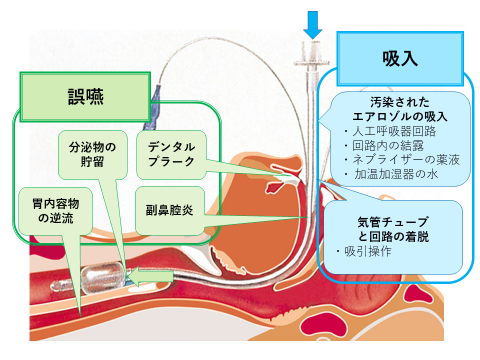
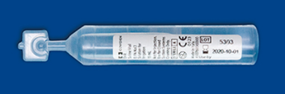

Ⅵ. 侵襲処置・医療器具関連感染防止策
3. 人口呼吸器関連肺炎予防対策
- 人工呼吸器関連肺炎

人工呼吸器装着後、48時間以降に発症した肺炎、または、人工呼吸器離脱後、48時間以内に発症した肺炎を、人工呼吸器関連肺炎（ventilator-associated pneumonia ; VAP）という。日本環境感染学会教育ツールVer.3 07．人工呼吸器関連肺炎予防 より一部改変
- 人工呼吸器関連肺炎の感染経路と発生機序
感染経路には、人工呼吸器を介した微生物の侵入経路と、口腔内や下咽頭部の分泌物を介した微生物の侵入経路がある。
- 感染予防対策
- 人工呼吸器の早期離脱
- 人工呼吸器管理下の患者における人工呼吸器関連肺炎の発生率は、装着期間が長くなるほど高くなる。人工呼吸器が離脱できるかどうかを毎日SBT（自発呼吸試験）を評価し、人工呼吸器からの早期離脱を計画する。
- 医学的に可能なら、気管内挿管よりも非侵襲的持続陽圧換気システム（NPPV）を使用する。
- 人工呼吸器を介した微生物の侵入予防
- 人工呼吸器回路の衛生的な管理
- 人工呼吸器の回路は滅菌済みのディスポ製品を使用する。
- 人工呼吸器の回路は原則として定期交換は不要であり、汚染や作動不良がある場合に限って交換する。
- 人工呼吸器回路内の結露の除去
- 回路内の結露は、患者側に流れないよう留意し、定期的に除去する。
- 貯留水の除去や廃棄を行う際は、手袋を着用し、装着前後に手指衛生を実施する。
- 加温加湿器の管理
- 加温加湿器
- 加温加湿器の管理
- 滅菌水を用い、閉鎖式補給システムを用いる。
＜人工鼻の禁忌＞
・気道内分泌物が粘稠で痰の切れが悪い、血性痰がでる患者
・呼気時の１回換気量が吸気時の70％以下である場合
・体温が32℃以下の患者
・ネブライザー使用中
- 加温加湿器の水は、人工呼吸回路の汚染原因になりうる。禁忌がなければ、人工鼻の使用を考慮する。
- 人工鼻
- 人工鼻（HME）は48時間ごとに交換、且つ、目に見える汚染や機械的問題がある場合に交換する。
- 人工鼻は、機械的に作動不良になるか、目に見えて汚染があれば交換とし、製品の取り扱いは規定に基づいて使用する。
- 吸引と吸引チューブの管理
- 気管吸引操作は、清潔操作とし、必要最小限にとどめる。
- 開放式吸引システムで吸引する場合は、単回使用チューブを使用する。

吸引チューブの洗浄には、滅菌水を使用する。閉鎖式吸引システムで使用する閉鎖式サクション洗浄液（写真１）は、1回使用毎に使い切る。
写真1．閉鎖式サクション洗浄液
- 口腔内や下咽頭部の分泌物を介した微生物の侵入予防
- 気管内挿管の部位の選択
- 口腔内や下咽頭部の分泌物を介した微生物の侵入予防
- 医学的に可能なら、経鼻挿管より経口挿管を行う。経鼻挿管と比較し、経口挿管の方が口腔咽頭内容物の誤嚥防止効果や副鼻腔炎回避等の利点がある。
- 分泌物の貯留の防止
- 可能であれば、カフ上部の貯留物を吸引する為の側孔付き気管チューブを使用する
- 気管チューブの抜管時または気管チューブを動かす前、体位変換前には、カフ上部や口腔内の分泌物が吸引・除去されていることを確認する。
- 胃内容物の逆流防止
- 持続的な仰臥位での管理は避ける。
- 誤嚥のハイリスク患者は30～45度頭部挙上しておく。
- 口腔ケアの実施
- 最低1回/日はブラッシングによる口腔ケアを実施し → 毎日ブラッシングを含む口腔ケアを実施し、必要に応じて口腔内の湿潤を保つようにする、口腔内細菌の増加を抑え、気道内に誤嚥する菌量を減少させる。口腔ケアの手順は、ナーシングスキル®「気管挿管患者の口腔ケア」を参照する。
- 毎日、患者の口腔状態を観察し、適宜口腔内を湿らせる等により湿潤環境を保持し、 良好な口腔状態を維持する。
- H2ブロッカーやプロトンポンプ阻害薬等の制酸薬の使用
- VAP発症リスク増加との関連が示唆されており、ストレス潰瘍のハイリスク例においてのみ制酸薬の使用を検討する。